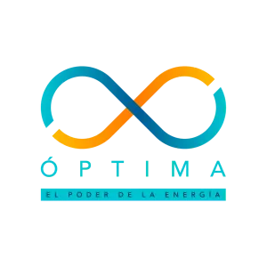
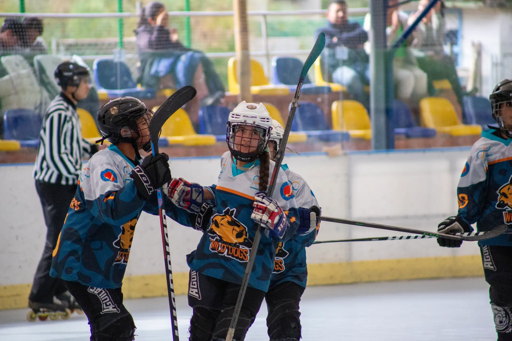
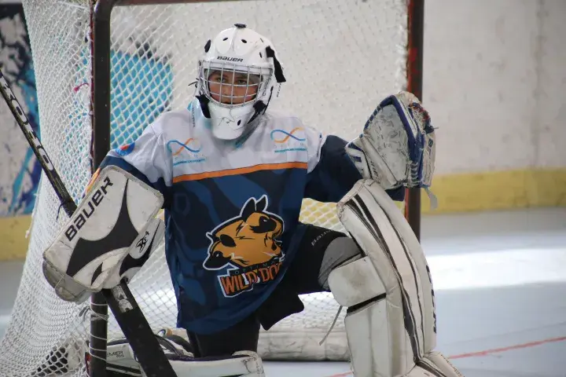
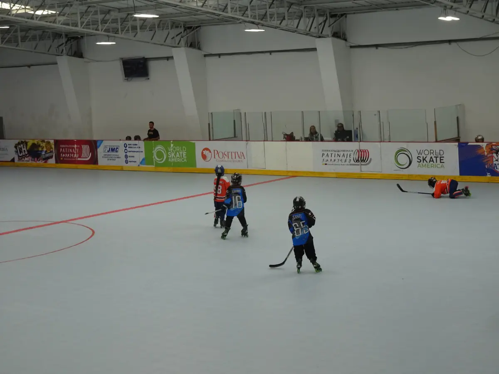
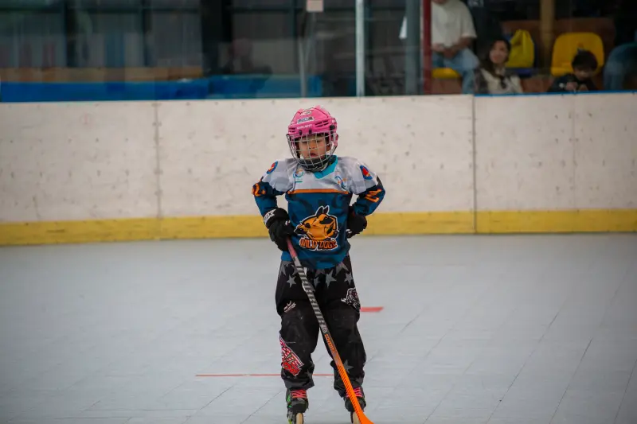
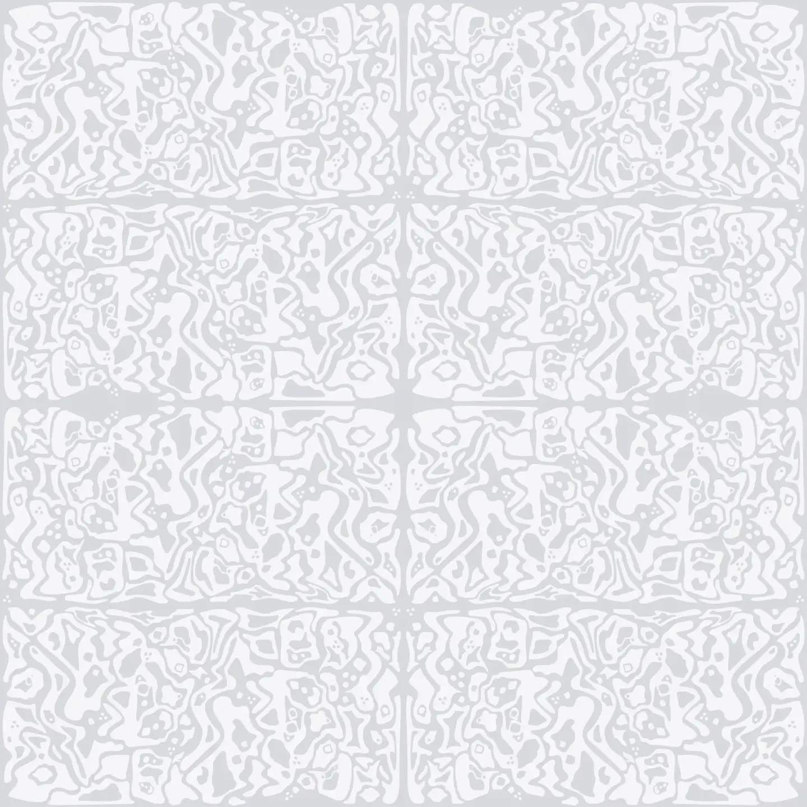
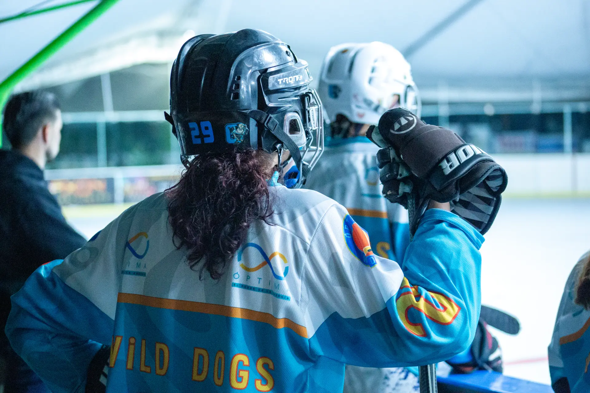

WD

WILD DOGS
HOCKEY CLUB · BOGOTÁ

Optima Presenta
EL PODER
DE LA
MANADA
Wild Dogs Hockey Club · Bogotá, Colombia

Arqueros de Élite

Jugando con Pasión

La Manada en Acción

La Manada
30
Jugadores
6
Categorías
100
%
Pasión

Únete a la Manada
wilddogs.com.co